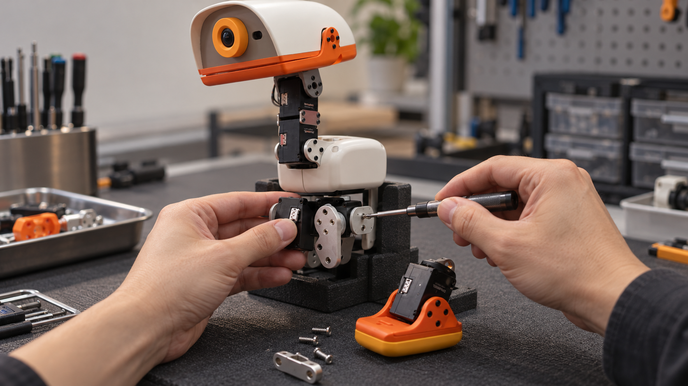

09:41
▂▄▆ ▰
PSOP
FIELD ASSIST
×
MD-SERVO-CHECK-01 / S03 安装与复检
03 安装进行中
对齐髋部连接支架
固定后复检
MD-01 · 目标安装区域 J01
3 / 5
▂▅▃▆▃▅▂
现场语音 · 转写示例
“先
对齐支架
，固定后再
复检
。”
安装过程生成示意
J01 · 安装区域
支架对齐位置
固定后提交检查记录
身份信息
待核对
复检记录
待补充
安装完成后提交检查记录
!
固定完成后，再核对安装结果
当前仍在安装，复检记录待补充
记录安装观察
查看复检要求